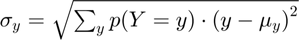
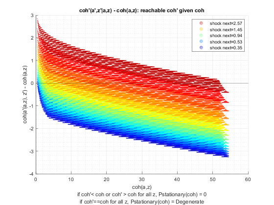

Derive Savings Distribution (Loop)
back to Fan's Dynamic Assets Repository Table of Content.
Contents
- FF_AZ_DS finds the stationarz savings distribution
- Default
- Parse Parameters
- Start Profiler and Timer
- f(a,z): Initialize Output Matrixes
- f(a,z): Initialize Convergence Conditions
- f(a,z): Derive Stationary Distribution
- f(a,z): Iterate over Probability mass for Discrete Random Variable
- f(a,z): Check Tolerance and Continuation
- End Time and Profiler
- f(y), f(c), f(a): Generate Key Distributional Statistics for Each outcome
- f(y), f(c), f(a): Find p(outcome(states)), proability mass function for each outcome
- f(y), f(c), f(a): Compute Statistics for outcomes
- f(y), f(c), f(a): Store Statistics Specific to Each Outcome
- Process Optimal Choices
function [result_map] = ff_az_ds(varargin)
FF_AZ_DS finds the stationarz savings distribution
Building on the Asset Dynamic Programming Problem ff_az_vf_vecsv, here we solve for the asset distribution.
This is the iterative looped solution to derive the asset distribution determined by the policy functions. Note that the asset distribution is a joint discrete random variable. We derive f(a,z), where f is the joint discrete random variables probability mass. Then we can derive f(a'(a,z)), f(c(a,z)) directly. The procedure here does not involve simulation. Simulation could also be used to derive these distributions, but given the discrete grid based solution algorithm, there is no need to introduce simulation and associated errors once we have fixed the shock process that generates randomness.
The function here accomplishes two tasks: (1) deriving the asset distribution as a discrete random variable over the states (2) calculating various statistics based on the discrete joint random variable's probability mass function for various outcomes of the model
Distributions of Interest:


Statistics include:

- 
- percentiles:

- fraction of outcome held by up to percentiles:

@param param_map container parameter container
@param support_map container support container
@param armt_map container container with states, choices and shocks grids that are inputs for grid based solution algorithm
@param func_map container container with function handles for consumption cash-on-hand etc.
@return result_map container contains policy function matrix, value function matrix, iteration results, and policy function, value function and iteration results tables.
new keys included in result_map in addition to the output from ff_az_vf_vecsv are various distribution statistics for each model outcome, keys include cl_mt_pol_a, cl_mt_pol_c, cl_mt_pol_coh, etc, these include:
- the first element of each of these cell array is y(a,z), the outcome/choice at the state space points
- the second element of the cell is another container, which contains statistics computed for f(y) based on y(a,z) and f(a,z), f(y) is the probability mass function for outcome y given the stationary distribution f(a,z). The second element container also includes f(y) itself as well as f(y,z).
- additionally, result_map also stores some of the statistics for different variables jointly together. (a) tb_outcomes_meansdperc: where each row is a different outcome of the model, and each table column stores a different statistics of interest. (b) tb_outcomes_fracheld: which measures the fraction of asset held by different people.
@example
% Get Default Parameters
it_param_set = 6;
[param_map, support_map] = ffs_abz_set_default_param(it_param_set);
% Change Keys in param_map
param_map('it_a_n') = 500;
param_map('it_z_n') = 11;
param_map('fl_a_max') = 100;
param_map('fl_w') = 1.3;
% Change Keys support_map
support_map('bl_display') = false;
support_map('bl_post') = true;
support_map('bl_display_final') = false;
% Call Program with external parameters that override defaults
ff_az_ds(param_map, support_map);@include
@seealso
Default
for default invokes:
- it_subset = 5 is basic invoke quick test
- it_subset = 6 is invoke full test
- it_subset = 7 is profiling invoke
- it_subset = 8 is matlab publish
- it_subset = 9 is invoke operational (only final stats)
params_len = length(varargin); bl_input_override = 0; if (params_len == 6) bl_input_override = varargin{6}; end if (bl_input_override) % if invoked from outside override fully [param_map, support_map, armt_map, func_map, result_map, ~] = varargin{:}; else % default invoke close all; it_param_set = 8; bl_input_override = true; % 1. Generate Parameters [param_map, support_map] = ffs_az_set_default_param(it_param_set); % Note: param_map and support_map can be adjusted here or outside to override defaults % param_map('it_a_n') = 750; % param_map('it_z_n') = 15; % 2. Generate function and grids [armt_map, func_map] = ffs_az_get_funcgrid(param_map, support_map, bl_input_override); % 1 for override % 3. Solve value and policy function using az_vf_vecsv, if want to solve % other models, solve outside then provide result_map as input [result_map] = ff_az_vf_vecsv(param_map, support_map, armt_map, func_map); end


Parse Parameters
% append function name st_func_name = 'ff_az_ds'; support_map('st_profile_name_main') = [st_func_name support_map('st_profile_name_main')]; support_map('st_mat_name_main') = [st_func_name support_map('st_mat_name_main')]; support_map('st_img_name_main') = [st_func_name support_map('st_img_name_main')]; % result_map % ar_st_pol_names is from section _Process Optimal Choices_ in the value % function code. params_group = values(result_map, {'cl_mt_pol_a', 'ar_st_pol_names'}); [cl_mt_pol_a, ar_st_pol_names] = params_group{:}; mt_pol_a = deal(cl_mt_pol_a{1}); % armt_map params_group = values(armt_map, {'ar_a', 'mt_z_trans', 'ar_z'}); [ar_a, mt_z_trans, ar_z] = params_group{:}; % param_map params_group = values(param_map, {'it_a_n', 'it_z_n'}); [it_a_n, it_z_n] = params_group{:}; params_group = values(param_map, {'it_maxiter_dist', 'fl_tol_dist'}); [it_maxiter_dist, fl_tol_dist] = params_group{:}; % support_map params_group = values(support_map, {'bl_profile_dist', 'st_profile_path', ... 'st_profile_prefix', 'st_profile_name_main', 'st_profile_suffix',... 'bl_time', 'bl_display_dist', 'it_display_every', 'bl_display_final_dist', 'bl_post'}); [bl_profile_dist, st_profile_path, ... st_profile_prefix, st_profile_name_main, st_profile_suffix, ... bl_time, bl_display_dist, it_display_every, bl_display_final_dist, bl_post] = params_group{:};
Start Profiler and Timer
% Start Profile if (bl_profile_dist) close all; profile off; profile on; end % Start Timer if (bl_time) tic; end
f(a,z): Initialize Output Matrixes
Initialize the distribution to be uniform
mt_dist_az_init = ones(length(ar_a),length(ar_z))/length(ar_a)/length(ar_z); mt_dist_az_cur = mt_dist_az_init; mt_dist_az_zeros = zeros(length(ar_a),length(ar_z));
f(a,z): Initialize Convergence Conditions
bl_histiter_continue = true; it_iter = 0; ar_dist_diff_norm = zeros([it_maxiter_dist, 1]); mt_dist_perc_change = zeros([it_maxiter_dist, it_z_n]);
f(a,z): Derive Stationary Distribution
Iterate over the discrete joint random variable variables (a,z)
while (bl_histiter_continue)
it_iter = it_iter + 1;
f(a,z): Iterate over Probability mass for Discrete Random Variable
compared to ff_az_vf, we basically have the same set of loops. There, there were four loops, here there are three loops. We eliminated the loop over next period choices, because here we already know optimal choices
% initialize empty mt_dist_az = mt_dist_az_zeros; % loop 1: over exogenous states for it_z_i = 1:length(ar_z) % loop 2: over endogenous states for it_a_j = 1:length(ar_a) % f(a'|a) = 1 for only one a' % in dynamic programming problem, had a loop over choices, now % already have optimal choices, do not need to loop fl_aprime = mt_pol_a(it_a_j, it_z_i); it_a_prime_idx = find(ar_a == fl_aprime); % loop 3: loop over future shocks % E_{z'}(f(a',z'|a,z)*f(a,z)) for it_zp_q = 1:length(ar_z) % current probablity at (a,z) fl_cur_za_prob = mt_dist_az_cur(it_a_j, it_z_i); % f(z'|z) transition fl_ztoz_trans = mt_z_trans(it_z_i, it_zp_q); % f(a',z'|a,z)*f(a,z) fl_zfromza = fl_cur_za_prob*fl_ztoz_trans; % cumulating mt_dist_az(it_a_prime_idx, it_zp_q) = mt_dist_az(it_a_prime_idx, it_zp_q) + fl_zfromza; end end end
f(a,z): Check Tolerance and Continuation
% Difference across iterations ar_dist_diff_norm(it_iter) = norm(mt_dist_az - mt_dist_az_cur); mt_dist_perc_change(it_iter, :) = sum((mt_dist_az ~= mt_dist_az))/(it_a_n); % Update mt_dist_az_cur = mt_dist_az; % Print Iteration Results if (bl_display_dist && (rem(it_iter, it_display_every)==0)) fprintf('Dist it_iter:%d, fl_dist_diff:%d\n', it_iter, ar_dist_diff_norm(it_iter)); tb_hist_iter = array2table([sum(mt_dist_az_cur,1); std(mt_dist_az_cur,1); ... mt_dist_az_cur(1,:); mt_dist_az_cur(it_a_n,:)]); tb_hist_iter.Properties.VariableNames = strcat('z', string((1:size(mt_dist_az,2)))); tb_hist_iter.Properties.RowNames = {'mdist','sddist', 'Ldist', 'Hdist'}; disp('mdist = sum(mt_dist_az_cur,1) = sum_{a}(p(a)|z)') disp('sddist = std(mt_pol_a_cur,1) = std_{a}(p(a)|z)') disp('Ldist = mt_dist_az_cur(1,:) = p(min(a)|z)') disp('Hdist = mt_dist_az_cur(it_a_n,:) = p(max(a)|z)') disp(tb_hist_iter); end % Continuation Conditions: if (it_iter == (it_maxiter_dist + 1)) bl_histiter_continue = false; elseif ((it_iter == it_maxiter_dist) || ... (ar_dist_diff_norm(it_iter) < fl_tol_dist)) it_iter_last = it_iter; it_iter = it_maxiter_dist; end
Dist it_iter:20, fl_dist_diff:1.665561e-03
mdist = sum(mt_dist_az_cur,1) = sum_{a}(p(a)|z)
sddist = std(mt_pol_a_cur,1) = std_{a}(p(a)|z)
Ldist = mt_dist_az_cur(1,:) = p(min(a)|z)
Hdist = mt_dist_az_cur(it_a_n,:) = p(max(a)|z)
z1 z2 z3 z4 z5 z6 z7 z8 z9 z10 z11 z12 z13 z14 z15
__________ __________ __________ __________ __________ __________ __________ __________ __________ __________ __________ __________ __________ __________ __________
mdist 0.0027111 0.0069539 0.018515 0.040952 0.075854 0.11781 0.15343 0.16755 0.15343 0.11781 0.075854 0.040952 0.018515 0.0069539 0.0027111
sddist 1.4229e-05 3.3683e-05 8.1849e-05 0.00016164 0.00026177 0.00034782 0.00038019 0.00034855 0.00027792 0.00019585 0.00011968 6.2186e-05 2.7259e-05 9.9964e-06 3.8288e-06
Ldist 0.00036801 0.00086134 0.0020605 0.0039713 0.0061891 0.0077038 0.0074532 0.0053945 0.0028017 0.0010047 0.00024081 3.7604e-05 3.7506e-06 2.3537e-07 9.4148e-09
Hdist 0 0 0 0 0 0 0 0 0 0 0 0 0 0 0
Dist it_iter:40, fl_dist_diff:2.986241e-03
mdist = sum(mt_dist_az_cur,1) = sum_{a}(p(a)|z)
sddist = std(mt_pol_a_cur,1) = std_{a}(p(a)|z)
Ldist = mt_dist_az_cur(1,:) = p(min(a)|z)
Hdist = mt_dist_az_cur(it_a_n,:) = p(max(a)|z)
z1 z2 z3 z4 z5 z6 z7 z8 z9 z10 z11 z12 z13 z14 z15
__________ __________ __________ __________ __________ ________ _________ __________ __________ __________ __________ __________ __________ __________ __________
mdist 0.0027089 0.0069499 0.018507 0.040943 0.075848 0.11781 0.15344 0.16757 0.15344 0.11781 0.075848 0.040943 0.018507 0.0069499 0.0027089
sddist 4.5406e-05 0.00010801 0.00026318 0.00051941 0.00083469 0.001086 0.0011356 0.00096406 0.00069769 0.00045419 0.000264 0.00013242 5.6411e-05 2.0246e-05 7.6433e-06
Ldist 0.0012218 0.0028919 0.0069974 0.013658 0.021555 0.027143 0.026522 0.019352 0.010116 0.0036459 0.00087725 0.00013738 1.373e-05 8.6285e-07 3.455e-08
Hdist 0 0 0 0 0 0 0 0 0 0 0 0 0 0 0
Dist it_iter:60, fl_dist_diff:1.256737e-03
mdist = sum(mt_dist_az_cur,1) = sum_{a}(p(a)|z)
sddist = std(mt_pol_a_cur,1) = std_{a}(p(a)|z)
Ldist = mt_dist_az_cur(1,:) = p(min(a)|z)
Hdist = mt_dist_az_cur(it_a_n,:) = p(max(a)|z)
z1 z2 z3 z4 z5 z6 z7 z8 z9 z10 z11 z12 z13 z14 z15
__________ __________ __________ _________ _________ _________ _________ _________ _________ __________ __________ __________ __________ __________ __________
mdist 0.0027089 0.0069499 0.018507 0.040943 0.075848 0.11781 0.15344 0.16757 0.15344 0.11781 0.075848 0.040943 0.018507 0.0069499 0.0027089
sddist 7.7356e-05 0.00018695 0.00046252 0.0009265 0.0015059 0.0019653 0.0020283 0.0016524 0.0011096 0.00066676 0.00036705 0.00017767 7.3595e-05 2.5843e-05 9.6064e-06
Ldist 0.0021133 0.0050982 0.012577 0.025069 0.040399 0.051841 0.05147 0.038048 0.020096 0.0073012 0.0017675 0.00027804 2.7878e-05 1.7561e-06 7.043e-08
Hdist 0 0 0 0 0 0 0 0 0 0 0 0 0 0 0
Dist it_iter:80, fl_dist_diff:1.155942e-04
mdist = sum(mt_dist_az_cur,1) = sum_{a}(p(a)|z)
sddist = std(mt_pol_a_cur,1) = std_{a}(p(a)|z)
Ldist = mt_dist_az_cur(1,:) = p(min(a)|z)
Hdist = mt_dist_az_cur(it_a_n,:) = p(max(a)|z)
z1 z2 z3 z4 z5 z6 z7 z8 z9 z10 z11 z12 z13 z14 z15
__________ __________ _________ __________ _________ _________ ________ _________ _________ __________ __________ __________ __________ __________ __________
mdist 0.0027089 0.0069499 0.018507 0.040943 0.075848 0.11781 0.15344 0.16757 0.15344 0.11781 0.075848 0.040943 0.018507 0.0069499 0.0027089
sddist 8.1883e-05 0.00019888 0.0004945 0.00099585 0.0016266 0.0021306 0.002201 0.0017863 0.0011872 0.00070391 0.00038387 0.00018476 7.6197e-05 2.6662e-05 9.8858e-06
Ldist 0.0022395 0.0054317 0.013474 0.027026 0.043825 0.05656 0.056435 0.041889 0.022197 0.0080848 0.001961 0.0003089 3.1004e-05 1.9543e-06 7.8422e-08
Hdist 0 0 0 0 0 0 0 0 0 0 0 0 0 0 0
Dist it_iter:100, fl_dist_diff:9.063174e-06
mdist = sum(mt_dist_az_cur,1) = sum_{a}(p(a)|z)
sddist = std(mt_pol_a_cur,1) = std_{a}(p(a)|z)
Ldist = mt_dist_az_cur(1,:) = p(min(a)|z)
Hdist = mt_dist_az_cur(it_a_n,:) = p(max(a)|z)
z1 z2 z3 z4 z5 z6 z7 z8 z9 z10 z11 z12 z13 z14 z15
__________ __________ __________ _________ _________ _________ _________ _________ _________ __________ _________ __________ __________ __________ __________
mdist 0.0027089 0.0069499 0.018507 0.040943 0.075848 0.11781 0.15344 0.16757 0.15344 0.11781 0.075848 0.040943 0.018507 0.0069499 0.0027089
sddist 8.2244e-05 0.00019984 0.00049711 0.0010016 0.0016367 0.0021445 0.0022157 0.0017977 0.0011938 0.00070707 0.0003853 0.00018536 7.6418e-05 2.6732e-05 9.9095e-06
Ldist 0.0022496 0.0054586 0.013548 0.027188 0.04411 0.056957 0.056855 0.042216 0.022376 0.008152 0.0019776 0.00031155 3.1273e-05 1.9714e-06 7.911e-08
Hdist 0 0 0 0 0 0 0 0 0 0 0 0 0 0 0
end
End Time and Profiler
% End Timer if (bl_time) toc; end % End Profile if (bl_profile_dist) profile off profile viewer st_file_name = [st_profile_prefix st_profile_name_main st_profile_suffix]; profsave(profile('info'), strcat(st_profile_path, st_file_name)); end
f(y), f(c), f(a): Generate Key Distributional Statistics for Each outcome
Having derived f(a,z) the probability mass function of the joint discrete random variables, we now obtain distributional statistics. Note that we know f(a,z), and we also know relevant policy functions a'(a,z), c(a,z), or other policy functions. We can simulate any choices that are a function of the random variables (a,z), using f(a,z)
parameter structure provides a list of
- from result_map('ar_st_pol_names'), get list of outcome matrix on state space
- simulate each outcome using f(a,z) for probability draws
- compute key statistics: (1) mean (expectation=sum) (2) sd (3) min and max (4) iqr (5) fraction = 0 (6) percentiles including: 99.9, 99, 95, every 5 in between 5, 1, 0.01.
% Loop over outcomes, see end of % <https://fanwangecon.github.io/CodeDynaAsset/m_az/solve/html/ff_az_vf_vecsv.html % ff_az_vf_vecsv> where these are created for it_outcome_ctr=1:length(ar_st_pol_names)
f(y), f(c), f(a): Find p(outcome(states)), proability mass function for each outcome
Using from tools: fft_disc_rand_var_mass2outcomes, compute unique sorted outcomes for y(a,z) and find:


note: sum(mt_dist_az, 2) = result_map('cl_mt_pol_a'){2}, but not at small simulation grids. These two might be different because pol_a is based on a choices, mt_dist_az is based on a states
see end of ff_az_vf_vecsv outcomes in result_map are cells with two elements, first element is y(a,z), second element will be f(y) and y, generated here.
st_cur_output_key = ar_st_pol_names(it_outcome_ctr);
cl_mt_choice_cur = result_map(st_cur_output_key);
mt_choice_cur = cl_mt_choice_cur{1};
% run function from tools: fft_disc_rand_var_mass2outcomes
% <https://fanwangecon.github.io/CodeDynaAsset/tools/html/fft_disc_rand_var_mass2outcomes.html>
bl_input_override = true;
[tb_choice_drv_cur_byY, ar_choice_prob_byY, ar_choice_unique_sorted_byY, mt_choice_prob_byYZ, mt_choice_prob_byYA] = ...
fft_disc_rand_var_mass2outcomes(st_cur_output_key, mt_choice_cur, mt_dist_az, bl_input_override);
f(y), f(c), f(a): Compute Statistics for outcomes
Using from tools: fft_disc_rand_var_stats, compute these outcomes:
- $\mu_Y = E(Y) = \sum_{y} p(Y=y) \cdot y $

- percentiles:
- fraction of outcome held by up to percentiles:
% run function fft_disc_rand_var_stats.m from tools: % <https://fanwangecon.github.io/CodeDynaAsset/tools/html/fft_disc_rand_var_stats.html> [ds_stats_map] = fft_disc_rand_var_stats(st_cur_output_key, ar_choice_unique_sorted_byY', ar_choice_prob_byY'); % prcess results % retrieve scalar statistics: fl_choice_mean = ds_stats_map('fl_choice_mean'); fl_choice_sd = ds_stats_map('fl_choice_sd'); fl_choice_coefofvar = ds_stats_map('fl_choice_coefofvar'); fl_choice_min = ds_stats_map('fl_choice_min'); fl_choice_max = ds_stats_map('fl_choice_max'); fl_choice_prob_zero = ds_stats_map('fl_choice_prob_zero'); fl_choice_prob_min = ds_stats_map('fl_choice_prob_min'); fl_choice_prob_max = ds_stats_map('fl_choice_prob_max'); % retrieve distributional array stats tb_prob_drv = ds_stats_map('tb_prob_drv'); ar_choice_percentiles = tb_prob_drv{:,2}; ar_choice_perc_fracheld = tb_prob_drv{:,3}; % Display if (bl_display_final_dist) disp(['tb_prob_drv, Percentiles of Y, and Share of Y Held by Households up to this Percentile: ', st_cur_output_key]) disp(tb_prob_drv); end
"tb_prob_drv, Percentiles of Y, …" "cl_mt_pol_a"
percentiles cl_mt_pol_aPercentileValues fracOfSumHeldBelowThisPercentile
___________ ___________________________ ________________________________
0.1 0 0
1 0 0
5 0 0
10 0 0
15 0 0
20 0 0
25 0 0
35 0.13351 0.01087
50 0.33378 0.04828
65 0.73431 0.14685
75 1.1348 0.25996
80 1.4686 0.35468
85 1.8024 0.43783
90 2.3364 0.56644
95 3.271 0.73086
99 5.3405 0.92153
99.9 8.0774 0.98949
"tb_prob_drv, Percentiles of Y, …" "cl_mt_pol_coh"
percentiles cl_mt_pol_cohPercentileValues fracOfSumHeldBelowThisPercentile
___________ _____________________________ ________________________________
0.1 0.44468 0.00046931
1 0.59175 0.0056855
5 0.68262 0.014805
10 0.85587 0.035362
15 0.90837 0.060387
20 1.0479 0.098878
25 1.1136 0.10377
35 1.2772 0.15913
50 1.6681 0.26465
65 2.1977 0.39975
75 2.6879 0.51052
80 3.0188 0.57781
85 3.4471 0.65507
90 4.0585 0.74042
95 5.109 0.84688
99 7.4642 0.95916
99.9 10.402 0.99463
"tb_prob_drv, Percentiles of Y, …" "cl_mt_pol_c"
percentiles cl_mt_pol_cPercentileValues fracOfSumHeldBelowThisPercentile
___________ ___________________________ ________________________________
0.1 0.44468 0.00076903
1 0.59175 0.0093392
5 0.68262 0.024372
10 0.81947 0.054869
15 0.90837 0.10332
20 1.0364 0.12492
25 1.0479 0.17674
35 1.1964 0.25332
50 1.3276 0.41338
65 1.4161 0.55319
75 1.5268 0.66718
80 1.5952 0.72753
85 1.6619 0.78829
90 1.7521 0.85351
95 1.8668 0.92266
99 2.1241 0.98296
99.9 2.3562 0.99811
f(y), f(c), f(a): Store Statistics Specific to Each Outcome
see intro section
% Append prob mass functions to ds_stats_map ds_stats_map('mt_choice_prob_byYZ') = mt_choice_prob_byYZ; ds_stats_map('mt_choice_prob_byYA') = mt_choice_prob_byYA; ds_stats_map('tb_choice_prob_byY') = tb_choice_drv_cur_byY; % ds_stats_map is second element of cell for the key for the variable % in result_map cl_mt_choice_cur{2} = ds_stats_map; result_map(st_cur_output_key) = cl_mt_choice_cur; % key stats ar_keystats = [fl_choice_mean fl_choice_sd fl_choice_coefofvar fl_choice_min fl_choice_max ... fl_choice_prob_zero fl_choice_prob_min fl_choice_prob_max ar_choice_percentiles']; cl_outcome_names(it_outcome_ctr) = st_cur_output_key; if (it_outcome_ctr == 1) mt_outcomes_meansdperc = ar_keystats; mt_outcomes_fracheld = ar_choice_perc_fracheld'; else mt_outcomes_meansdperc = [mt_outcomes_meansdperc; ar_keystats]; mt_outcomes_fracheld = [mt_outcomes_fracheld; ar_choice_perc_fracheld']; end
end % *f(y), f(c), f(a)*: Store Statistics Shared Table All Outcomes % Process mean and and percentiles tb_outcomes_meansdperc = array2table(mt_outcomes_meansdperc); ar_fl_percentiles = tb_prob_drv{:,1}; cl_col_names = ['mean', 'sd', 'coefofvar', 'min', 'max', ... 'pYis0', 'pYisMINY', 'pYisMAXY', strcat('p', string(ar_fl_percentiles'))]; tb_outcomes_meansdperc.Properties.VariableNames = matlab.lang.makeValidName(cl_col_names); tb_outcomes_meansdperc.Properties.RowNames = matlab.lang.makeValidName(cl_outcome_names); % Process Aset Held by up to percentiles tb_outcomes_fracheld = array2table(mt_outcomes_fracheld); ar_fl_percentiles = tb_prob_drv{:,1}; cl_col_names = [strcat('fracByP', string(ar_fl_percentiles'))]; tb_outcomes_fracheld.Properties.VariableNames = matlab.lang.makeValidName(cl_col_names); tb_outcomes_fracheld.Properties.RowNames = matlab.lang.makeValidName(cl_outcome_names); % Add to result_map result_map('tb_outcomes_meansdperc') = tb_outcomes_meansdperc; result_map('mt_outcomes_fracheld') = mt_outcomes_fracheld; % Display if (bl_display_final_dist) disp('tb_outcomes_meansdperc: mean, sd, percentiles') disp(tb_outcomes_meansdperc); disp('tb_outcomes_fracheld: fraction of asset/income/etc held by hh up to this percentile') disp(tb_outcomes_fracheld); end
tb_outcomes_meansdperc: mean, sd, percentiles
mean sd coefofvar min max pYis0 pYisMINY pYisMAXY p0_1 p1 p5 p10 p15 p20 p25 p35 p50 p65 p75 p80 p85 p90 p95 p99 p99_9
_______ _______ _________ _______ ______ _______ _________ ________ _______ _______ _______ _______ _______ ______ ______ _______ _______ _______ ______ ______ ______ ______ ______ ______ ______
cl_mt_pol_a 0.83075 1.1783 1.4183 0 49.599 0.28147 0.28147 0 0 0 0 0 0 0 0 0.13351 0.33378 0.73431 1.1348 1.4686 1.8024 2.3364 3.271 5.3405 8.0774
cl_mt_pol_coh 2.1316 1.4662 0.68783 0.44468 54.536 0 0.0022497 0 0.44468 0.59175 0.68262 0.85587 0.90837 1.0479 1.1136 1.2772 1.6681 2.1977 2.6879 3.0188 3.4471 4.0585 5.109 7.4642 10.402
cl_mt_pol_c 1.3008 0.34504 0.26524 0.44468 4.9363 0 0.0022497 0 0.44468 0.59175 0.68262 0.81947 0.90837 1.0364 1.0479 1.1964 1.3276 1.4161 1.5268 1.5952 1.6619 1.7521 1.8668 2.1241 2.3562
tb_outcomes_fracheld: fraction of asset/income/etc held by hh up to this percentile
fracByP0_1 fracByP1 fracByP5 fracByP10 fracByP15 fracByP20 fracByP25 fracByP35 fracByP50 fracByP65 fracByP75 fracByP80 fracByP85 fracByP90 fracByP95 fracByP99 fracByP99_9
__________ _________ ________ _________ _________ _________ _________ _________ _________ _________ _________ _________ _________ _________ _________ _________ ___________
cl_mt_pol_a 0 0 0 0 0 0 0 0.01087 0.04828 0.14685 0.25996 0.35468 0.43783 0.56644 0.73086 0.92153 0.98949
cl_mt_pol_coh 0.00046931 0.0056855 0.014805 0.035362 0.060387 0.098878 0.10377 0.15913 0.26465 0.39975 0.51052 0.57781 0.65507 0.74042 0.84688 0.95916 0.99463
cl_mt_pol_c 0.00076903 0.0093392 0.024372 0.054869 0.10332 0.12492 0.17674 0.25332 0.41338 0.55319 0.66718 0.72753 0.78829 0.85351 0.92266 0.98296 0.99811
Process Optimal Choices
% % if (bl_post) % bl_input_override = true; % result_map('ar_dist_diff_norm') = ar_dist_diff_norm(1:it_iter_last); % result_map('mt_dist_perc_change') = mt_dist_perc_change(1:it_iter_last, :); % result_map = ff_ds_vf_post(param_map, support_map, armt_map, func_map, result_map, bl_input_override); % end %
end
ans =
Map with properties:
Count: 13
KeyType: char
ValueType: any